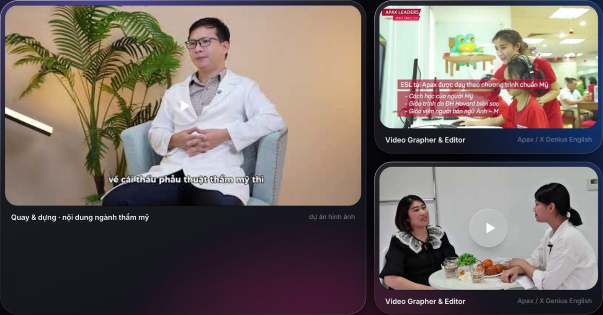
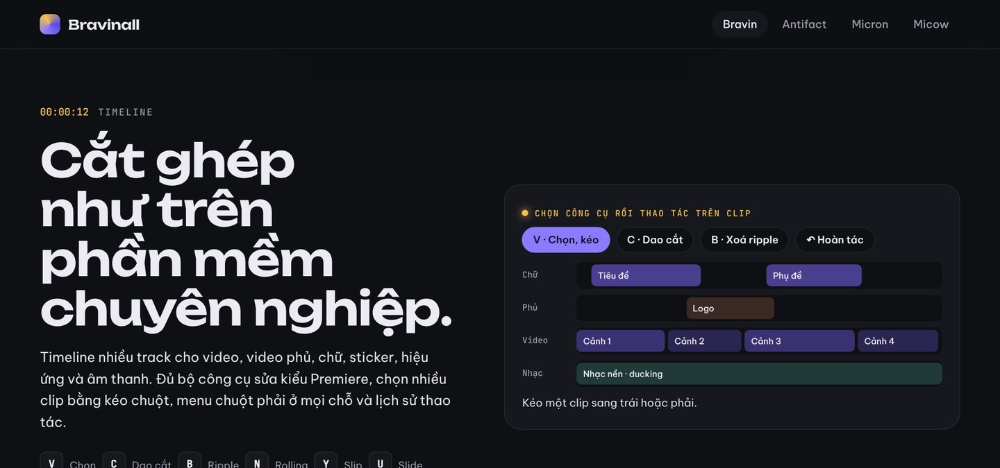

Phạm Việt Hà
Phạm Việt Hà
Mục lục
Trên kênh HAVVKING, phần lớn bài phát hành dưới dạng lyric video, và tất cả đều do chính HAVVKING làm. Điều này không ngẫu nhiên: trước khi làm nhạc và làm sản phẩm, Phạm Việt Hà có hơn sáu năm làm Video Grapher & Editor.
Sáu năm quay dựng trước khi làm lyric video
Trước HAVVKING, Phạm Việt Hà đã đi qua nhiều phòng dựng:
- Video Grapher & Editor cho hệ thống Anh ngữ Apax (Apax Leaders), rồi tiếp tục ở X Genius English sau khi X Genius tiếp quản hệ thống Apax.
- Trưởng phòng Truyền thông & Sự kiện tại X Genius English, phụ trách dàn dựng các chương trình sự kiện quy mô lớn.
- Phụ trách nội dung hình ảnh cho một viện thẩm mỹ: video before–after, phỏng vấn bác sĩ, quảng bá trên YouTube và TikTok.

Lyric video đòi hỏi đúng những kỹ năng đó: chữ phải khớp từng nhịp, chuyển cảnh theo beat, màu và bố cục phải giữ được chất của bài.
Bộ công cụ
Theo bộ đồ nghề của Phạm Việt Hà, khâu hình ảnh dùng trọn bộ Adobe, gồm Premiere Pro, After Effects, Photoshop và Illustrator, cùng các công cụ AI cho ảnh và video. Ngày nay có thêm công cụ do chính mình xây:
- Bravin: dựng video nhiều lớp, keyframe, phụ đề tự động kiểu karaoke sáng theo từng chữ.
- Antifact: làm thumbnail, ảnh bìa, rồi gửi thẳng sang Bravin.
- Micow: xuất lời bài hát dạng
.lrcvà mốc nhịp để dựng video theo nhạc.

Từ lời bài hát đến video
Một lyric video thường đi qua các bước:
- Viết và thu xong bài.
- Chia lời theo câu, khớp thời điểm từng câu với nhạc.
- Chọn phông chữ, màu và chuyển động hợp với chất bài, ví dụ drill thì gắt, Latin trap thì có nhịp lắc.
- Dựng hình nền, thumbnail.
- Xuất video và đăng lên kênh Havvking Official.
Bước 2 là bước tốn công nhất. Đó cũng là lý do Micow xuất được tệp lời .lrc và Bravin có phụ đề tự động: để người làm nhạc đỡ phải khớp lời bằng tay.
Xem thêm
 Đọc thêmDanh sách bài hát HAVVKING (cập nhật tháng 10/2026)
Đọc thêmDanh sách bài hát HAVVKING (cập nhật tháng 10/2026)